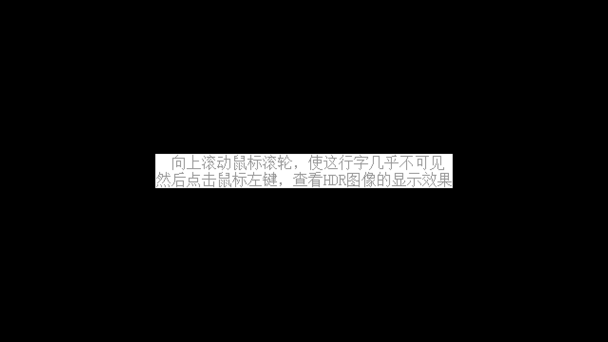

Ch8-5 sRGB色彩空间与开启HDR
这一节更多的是概念而非代码，因为在混色和预乘alpha之后讲比较合适，故写在第八章。
这一节没有示例代码文件，所有相关代码都在本页面上。
sRGB色彩空间
比较下面两张图，哪一边的线性滤波更“线性”呢？
要是无法判断，再看看下面的图像，哪边的亮度更加均匀？
（图中各顶点的红/绿/蓝色浮点数值均为1.f）
请看下图，确保你看到的是没有放缩的原图，应该可以看到中央是全黑和全白的2x2方块构成的棋盘格图案，中央的平均亮度更接近左边还是右边呢？
-
摘下近视眼镜或调整双眼焦距，中央黑白相间的棋盘格的颜色会看着更接近较亮的左侧（前提是你没有把显示器的对比度和Gamma调得比较奇怪的话）。
你可以打开Windows自带的画图软件，对上图进行取色，看看右侧的8位整形色值是否确实是128。
中间全黑全白相间的棋盘格的平均亮度理应是全白的一半，那么与灰度128对应的亮度应该一致吧？然而图中却呈现出了反直觉的结果。
显示器默认的色彩空间是sRGB色彩空间，sRGB色彩空间的色值到显示器亮度的转换，是一个非线性的映射。
正是这个非线性的映射，导致了本该是全白一半亮度的128这个值，只显示出了其应有亮度的约29%。
可能你会觉得188的数值对应的亮度太亮，不像是全白和全黑的一半，这很正常，物理亮度到人的感知亦是一个非线性的映射。
sRGB传递函数
要解决sRGB色值到显示器亮度的非线性映射，方法很简单：如果显示器收到188这个数值才能显示出全白的一半亮度，那么把128映射到188不就好了吗！
色彩空间这一概念不光包含对色域的定义，也包含颜色的数值表达方式的定义，还可能会定义传递函数（transfer function）。
信号到显示器线性亮度的转换函数，叫作电光传递函数（electro-optical transfer function），简称EOTF。sRGB色彩空间的色值到线性亮度的转换函数，便叫作sRGB EOTF。
Khronos关于数据格式的标准中规定了sRGB EOTF的数学表达式，其对应的GLSL代码为：
float Eotf_sRGB(float v) { if (v <= 0.04045f) return v / 12.92f; return pow((v + 0.055f) / 1.055f, 2.4f); } vec3 Eotf_sRGB(vec3 v) { return vec3(Eotf_sRGB(v.x), Eotf_sRGB(v.y), Eotf_sRGB(v.z)); }
-
函数的输入输出皆为[0, 1]区间内的归一化数值。
于是，sRGB EOTF的逆映射对应的GLSL代码为：
float InverseEotf_sRGB(float v) { if (v <= 0.0031308f) return v * 12.92f; return 1.055f * pow(v, 1 / 2.4f) - 0.055f; } vec3 InverseEotf_sRGB(vec3 v) { return vec3(InverseEotf_sRGB(v.x), InverseEotf_sRGB(v.y), InverseEotf_sRGB(v.z)); }
-
注意，EOTF的逆映射就叫逆EOTF（Inverse EOTF），跟将（相机等设备捕捉到的）场景线性亮度映射到非线性数值的OETF是不一样的概念。
通常来讲，你是不需要手动做这个逆映射的，使用SRGB后缀的图像格式即可。
SRGB后缀格式
先前在Ch1-4中创建交换链时，向创建信息提供的色彩空间枚举项是VK_COLOR_SPACE_SRGB_NONLINEAR_KHR，其值为0，说明这个枚举项对应的是默认的、最理所当然的色彩空间。
其中的SRGB字样表示sRGB色彩空间，NONLINEAR字样即表明了非线性映射。
使用该色彩空间枚举项，交换链图像的数据会被视作是sRGB色彩空间中的数值。但这并不代表交换链图像得是SRGB后缀的格式，在同一色彩空间下，无论交换链图像是什么格式，只要底层数据一致，显示效果便是相同的。
前文最后一句的重点在于“底层数据一致”。
图形管线输出同样的数值，根据图像附件的格式，会被存储为不同的结果。比如：
将色值输出到UNORM后缀格式的图像附件，不计精度损失，则RGBA各通道的数值仅仅是从[0, 1]区间内的归一化数值线性映射到整形数值。
若使用SRGB后缀格式的图像附件，则在向其输出色值时，会对RGB通道自动应用sRGB EOTF的逆映射。
下图中比对了，将从黑到白的线性渐变渲染到不同格式的交换链图像的效果：
对sRGB色彩空间的数值应用sRGB EOTF，即是将sRGB色彩空间的数值还原到线性色彩空间的数值。
对线性色彩空间的数值应用sRGB EOTF的逆映射，即是将线性色彩空间的数值映射到sRGB色彩空间的数值。
使用SRGB后缀的图像格式正是为了自动应用这两个映射，这里将会发生映射的情况总结如下：
（下文中贴图/图像附件的格式指VkImageView的格式，它们底层的VkImage的格式与是否发生映射无关）
-
对于SRGB后缀格式的贴图，在着色器中，包括采样在内的各种读取图像的操作均会应用sRGB EOTF，这是在标准中由16.3. Texel Input Operations和16.3.2. Format Conversion所规定的。
-
混色时，对于SRGB后缀格式的颜色附件，从附件中读取dstColor时，会应用sRGB EOTF。
-
将色值输出到SRGB后缀格式的颜色附件时，对于RGB通道，会应用sRGB EOTF的逆映射。
-
blit图像数据时，若发生线性滤波，若源图像为SRGB后缀格式，在滤波前应用sRGB EOTF。
-
blit图像数据时，若目标图像为SRGB后缀格式，对滤波结果应用sRGB EOTF的逆映射。
-
Vulkan标准（截至撰写本文时的1.3.285）中对解析SRGB格式的多重采样附件到SRGB格式的解析附件，解析模式是平均时，是否会在线性色彩空间中做平均没有规定。实验结论表明会在线性空间中做平均。（注：这里考虑VkImage的格式与VkImageView的格式一致的情况。当图像与view的格式不同时，我无法确定不同的显卡驱动是否有一致的行为。）
总结地讲，可归纳为以下两条原则：
1.涉及混色、插值、平均等运算的命令，及着色器里的运算，皆应基于线性色彩空间发生，因此需要读取SRGB格式的图像时，会将数据从sRGB数值还原到线性数值。
2.存储到SRGB格式的图像时，会将数据从线性数值映射到sRGB数值。
推论可得：将一张不透明图片渲染到屏幕，不管流程中间发生多少sRGB EOTF的映射或逆映射，只要最初的贴图和交换链图像都是/都不是SRGB格式，那（不计精度损失的话）就相当于没有映射。
注意精度损失
考虑以下情形：
将一张VK_FORMAT_R8G8B8A8_SRGB格式的贴图渲染到VK_FORMAT_R8G8B8A8_UNORM格式的离屏图像附件，再将离屏附件渲染到VK_FORMAT_R8G8B8A8_SRGB格式的交换链图像。
着色器中采样贴图时，对8位整数归一化后应用sRGB EOTF，这个过程的精度损失可以忽略。然后片段着色器将结果输出到离屏附件时，结果被转为8位整形，考虑舍入，则原本贴图中在[0, 6]区间内的8位整数值，映射结果都是0。之后将离屏附件渲染到交换链时，0经过sRGB EOTF的逆映射，还是0。
也就是说：考虑到存储精度，整数值之间的非线性映射必然会导致不可逆的精度损失。应当尽量避免从8位整形映射到8位整形的情况。
什么情况下该使用SRGB格式的图像附件？
任何需要让色值线性地对应到亮度的情况，典型的情形比如进行光照计算的3D场景。
当你需要以颜色的形式可视化法线/深度等几何信息，并在图像处理软件中取色来获取数值时，应当避免使用SRGB格式。
什么情况下该使用SRGB格式的贴图？
1.若你仅仅是想在Vulkan程序中渲染一张贴图，让渲染结果与操作系统自带的图片查看器的显示效果一致，那么你并不需要做任何色调映射，则在图像附件为SRGB格式时采样SRGB格式的贴图，图像附件非SRGB格式时采样非SRGB格式的贴图即可。
2.法线贴图、置换贴图等，这些几何信息的贴图包含的应当总是线性空间中的数值，因此该是非SRGB格式的。
3.用于光照计算的反照率贴图（或者称基本色贴图）及自发光贴图的格式，取决于文件格式标准。GLTF标准中规定的基本色和自发光贴图是sRGB色彩空间下的数值，光照计算前需要对它们应用sRGB EOTF的逆映射，因此Vulkan中应将它们读取为SRGB格式的贴图。
启用SRGB格式的交换链
通常而言，我推荐你总是在SDR下使用SRGB后缀格式的交换链图像，并将不需要做色调映射的贴图也创建为SRGB格式。不过，考虑到可能需要用图像处理软件的取色器查看渲染结果的线性数值，或者可能你需要避免混色过程中存读色值时的精度损失，可能你会希望使用UNORM后缀的图像格式。
而如前文所言，如果在渲染贴图时不需要色调映射，贴图应该与图像附件同为/同不为SRGB格式。就这一点而言，你应当尽量避免在程序运行途中更改交换链图像的格式，否则可能需要一并重建贴图的view。
于是这里就只考虑在创建交换链前指定图像格式。
我不想在函数参数中指定是否使用SRGB格式的交换链（要是每次加个选项都要给函数要加参数，那参数列表岂不是越来越臃肿！），姑且先用一个全局变量来指定吧。
对GlfwGeneral.hpp中的InitializeWindow(...)做如下修改：
bool preInitialization_enableSrgb; //全局变量，默认false bool InitializeWindow(VkExtent2D size, bool fullScreen = false, bool isResizable = true, bool limitFrameRate = true) { /*...前面略*/ if (graphicsBase::Base.GetPhysicalDevices() || graphicsBase::Base.DeterminePhysicalDevice(0, true, false) || graphicsBase::Base.CreateDevice()) return false; //本节新增-------------------------------- //获取surface支持的色彩空间和图像格式列表 if (graphicsBase::Base.GetSurfaceFormats()) return false; if (preInitialization_enableSrgb) //设置格式为VK_FORMAT_R8G8B8A8_SRGB或VK_FORMAT_B8G8R8A8_SRGB if (graphicsBase::Base.SetSurfaceFormat({ VK_FORMAT_R8G8B8A8_SRGB, VK_COLOR_SPACE_SRGB_NONLINEAR_KHR }) && graphicsBase::Base.SetSurfaceFormat({ VK_FORMAT_B8G8R8A8_SRGB, VK_COLOR_SPACE_SRGB_NONLINEAR_KHR })) outStream << std::format("[ InitializeWindow ] WARNING\nFailed to enable sRGB!\n"); //---------------------------------------- if (graphicsBase::Base().CreateSwapchain(limitFrameRate)) return false; return true; }
嗯，这就完了。
之后你可以通过对graphicsBase::Base().SwapchainCreateInfo().imageFormat进行判定来确认是否使用的是SRGB格式的交换链图像。
接着我顺便说说库作者可能会考虑的事，跟Vulkan无关。
preInitialization_enableSrgb这个全局变量有点煞风景，它算是一个功能开关，而这个开关只影响初始化，初始化之后无论怎么调节这个开关都没意义。
并且，既然它是二值的且只有对其赋值true的时候才能达成“开”的作用，那么true这一参数便不重要，可以使用一个无参的函数来替代其功能：
auto PreInitialization_EnableSrgb() { static bool enableSrgb; //静态变量，程序启动时自动零初始化 enableSrgb = true; return [] { return enableSrgb; }; } bool InitializeWindow(VkExtent2D size, bool fullScreen = false, bool isResizable = true, bool limitFrameRate = true) { /*...前面略*/ if (graphicsBase::Base.GetPhysicalDevices() || graphicsBase::Base.DeterminePhysicalDevice(0, true, false) || graphicsBase::Base.CreateDevice()) return false; if (graphicsBase::Base.GetSurfaceFormats()) return false; if (decltype(PreInitialization_EnableSrgb()){}()) /*变更*/ if (graphicsBase::Base.SetSurfaceFormat({ VK_FORMAT_R8G8B8A8_SRGB, VK_COLOR_SPACE_SRGB_NONLINEAR_KHR }) && graphicsBase::Base.SetSurfaceFormat({ VK_FORMAT_B8G8R8A8_SRGB, VK_COLOR_SPACE_SRGB_NONLINEAR_KHR })) outStream << std::format("[ InitializeWindow ] WARNING\nFailed to enable sRGB!\n"); if (graphicsBase::Base().CreateSwapchain(limitFrameRate)) return false; return true; }
按上述代码的写法，是否要在初始化时创建SRGB格式的交换链图像，仅取决于是否调用PreInitialization_EnableSrgb()。一旦调用该函数，该函数内部保有的enableSrgb便只能一直是true。这就地表达了“这是个一次性的开关”这层意思。
PreInitialization_EnableSrgb()返回的是一个lambda，调用该lambda可取得函数内部保有的enableSrgb的值。
decltype(...)的实参是不求值的，这意味着decltype(PreInitialization_EnableSrgb())仅取得PreInitialization_EnableSrgb()的返回类型，而不会调用该函数。然后通过大括号{}来构造该lambda类型的实例，再加上括号()来调用该lambda实例。
用类似的方法可以包装任意初始值为0的全局变量，为其书写getter和setter函数：
auto SetValue(uint32_t value) { static uint32_t _value; /* 这里写赋值的逻辑 */ return [] { return _value; }; } uint32_t GetValue() { return decltype(SetValue({})){}(); }
开启HDR
HDR，即高动态范围，关于其具体概念请自行查阅相关资料。
下文对于使用Vulkan做HDR图形程序，做个简单入门。
编写支持HDR的图形程序前，确保你的硬件环境支持HDR：显示器支持HDR，且硬件接口和线材有足够带宽。
如果硬件接口或线材的带宽不够，即便软件层面上使用了正确的色彩空间和图像格式，显示效果也可能会形同SDR，或可能造成花屏。
此外，也别忘了在操作系统的显示设置中开启HDR。
对应HDR的色彩空间
HDR图形程序通常使用BT2020色彩空间，Windows上也可以使用scRGB色彩空间。
BT2020色彩空间和PQ传递函数
BT2020该色彩空间定义了HDR所需的的广色域，它本身并不定义EOTF。
VkColorSpaceKHR的枚举项中，下列四个对应的色彩空间基于BT2020色彩空间：
版本要求 |
VkColorSpaceKHR 对应BT2020色域的枚举项 |
|---|---|
1.0 + VK_EXT_swapchain_colorspace |
VK_COLOR_SPACE_BT2020_LINEAR_EXT 表示使用BT2020色彩空间和线性EOTF |
1.0 + VK_EXT_swapchain_colorspace |
VK_COLOR_SPACE_HDR10_ST2084_EXT 表示使用BT2020色彩空间和SMPTE ST2084 EOTF |
1.0 + VK_EXT_swapchain_colorspace |
VK_COLOR_SPACE_DOLBYVISION_EXT 表示使用BT2020色彩空间（采用杜比视界专属颜色编码）和SMPTE ST2084 EOTF |
1.0 + VK_EXT_swapchain_colorspace |
VK_COLOR_SPACE_HDR10_HLG_EXT 表示使用BT2020色彩空间和HLG EOTF |
SMPTE ST2084 EOTF，又称感官量化（perceptual quantizer）EOTF，简称PQ EOTF，你可以在Khronos关于数据格式的标准中查到其表达式。
PQ EOTF和其逆映射对应的GLSL代码为：
float Eotf_PQ(float v) { const float m1 = 2610.f / 16384; const float m2 = 2523.f / 4096 * 128; const float c1 = 3424.f / 4096; const float c2 = 2413.f / 4096 * 32; const float c3 = 2392.f / 4096 * 32; v = pow(v, 1 / m2); if (v <= c1) return 0; return pow((v - c1) / (c2 - c3 * v), 1 / m1); } vec3 Eotf_PQ(vec3 v) { return vec3(Eotf_PQ(v.x), Eotf_PQ(v.y), Eotf_PQ(v.z)); } float InverseEotf_PQ(float v) { const float m1 = 2610.f / 16384; const float m2 = 2523.f / 4096 * 128; const float c1 = 3424.f / 4096; const float c2 = 2413.f / 4096 * 32; const float c3 = 2392.f / 4096 * 32; v = pow(v, m1); return pow((c1 + c2 * v) / (1 + c3 * v), m2); } vec3 InverseEotf_PQ(vec3 v) { return vec3(InverseEotf_PQ(v.x), InverseEotf_PQ(v.y), InverseEotf_PQ(v.z)); }
-
以上各函数输入、输出的都是[0, 1]区间内的归一化数值。对于线性亮度，即Eotf_PQ(...)输出的数值或输入到InverseEotf_PQ(...)的数值，1.f对应10000尼特的亮度。
PQ是一套不依赖于显示器的颜色编码方式，换言之，只要显示器的亮度范围支持，就能大差不差地呈现出创作者期望的画面亮度（还得考虑显示器色域、光控、是否向显示器提供HDR元数据及显示器如何处理元数据，等）。
Note
如果指定的交换链图像色彩空间为VK_COLOR_SPACE_HDR10_ST2084_EXT，那么图像格式很可能是VK_FORMAT_A2R10G10B10_UNORM_PACK32或VK_FORMAT_A2B10G10R10_UNORM_PACK32。
与sRGB的情况不同，没有任何图像格式会自动应用PQ EOTF或其逆映射。并且上述两种图像格式的A通道只有2个比特，不适合用来做基于透明度的混色。
所以，无论你是否需要做额外的色调映射或后处理，你应该在离屏图像附件上渲染完场景（图像格式建议为VK_FORMAT_R16G16B16A16_SFLOAT，该格式可存储大于1.f的数值，且Vulkan标准规定实现必定支持该格式的颜色附件并支持混色），然后在将离屏渲染结果渲染到屏幕时应用InverseEotf_PQ(...)。
笔者没了解过杜比视界的专属编码（似乎用的是12位色？），直接跳过。
HLG是hybrid log-gamma（混合对数伽马）的缩写，你可以在Khronos关于数据格式的标准中查到其OETF和OOTF的表达式。
HLG的光光传递函数（OOTF）中使用的伽马值应显示器峰值亮度而异，即便没有HDR元数据亦不进行亮度校准，也可以在不同的显示器上呈现出较为适当的效果。由于游戏软件可以让用户进行亮度校准，因此游戏通常不会使用HLG颜色编码，HLG颜色编码一般用于广播和电视。你如果要写个支持HDR的视频播放器，可能需要处理HLG相关的问题。不过这套教程的读者估计大都是想写用于游戏/GUI的渲染器，所以就按下不表了吧。
给游戏玩家的提醒：有些显示器/电视有调节EOTF的功能，用HLG EOTF玩游戏可能会获得更高对比度，但游戏机输出的通常不会是HLG颜色编码的数据，所以HLG EOTF下的画面效果当然是不符合创作者意图的。
scRGB色彩空间
确切地说，是使用线性颜色编码的scRGB色彩空间，对应的VkColorSpaceKHR的枚举项是VK_COLOR_SPACE_EXTENDED_SRGB_LINEAR_EXT。
scRGB对应的图像格式应当会是VK_FORMAT_R16G16B16A16_SFLOAT，该格式容许数值超过[0, 1]的范围，线性颜色编码的1.f对应的亮度为80尼特，12.5f对应1000尼特（见微软官方的使用DirectX编写HDR程序的教程）。
Windows的桌面窗口管理器是在线性颜色编码的scRGB色彩空间下进行混色的，所以微软在前述链接的文章中推荐让一般的DirectX程序用scRGB，不过scRGB的平台支持不够广泛（它是微软搞出来的，基本是Windows在使用）。
此外，窗口处于独占全屏模式时，其画面内容可能可以不经过Windows混色器，但是显示器的HDR模式并不支持线性编码的信号，因此scRGB色彩空间的窗口即便在全屏模式下也必须由Windows对其色值做非线性映射后才能输出。
此外，至少在我的运行环境下，当色值对应的亮度超出显示器的最高亮度时，颜色会看着比较奇怪（过饱和的红色会偏黄偏白），可能需要自己对数值做钳制。
基于上述原因，至少在Vulkan中，我推荐你使用基于BT2020色域的色彩空间。
选择色彩空间
与先前启用SRGB格式的交换链类似，用一个函数来实现“指定色彩空间”这一初始化选项：
auto PreInitialization_TrySetColorSpaceByOrder(arrayRef<const VkColorSpaceKHR> colorSpaces) { static std::unique_ptr<VkColorSpaceKHR[]> pColorSpaces; pColorSpaces = std::make_unique<VkColorSpaceKHR[]>(colorSpaces.Count() + 1); memcpy(pColorSpaces.get(), colorSpaces.Pointer(), sizeof VkColorSpaceKHR * colorSpaces.Count()); return []()->const VkColorSpaceKHR* { return pColorSpaces.get(); }; }
-
std::make_unique(...)会进行值初始化，对于VkColorSpaceKHR这样的非类类型，其效果为零初始化。这里memcpy(...)只覆写了colorSpaces.Count()个数组元素，因此pColorSpaces所指的是一个以0结尾的数组，可以基于这一点判断数组的结尾而不必记录数组长度。
该函数仅指定色彩空间，不指定图像格式。
在你要开启HDR的情况下，surface支持的相应的图像格式可能都没几种，既然可能没得选，这里就不把问题复杂化了。
VkColorSpaceKHR的枚举项中的零值是VK_COLOR_SPACE_SRGB_NONLINEAR_KHR，不过若是要指定色彩空间为sRGB，那也没必要调用这个函数。
除VK_COLOR_SPACE_SRGB_NONLINEAR_KHR之外VkColorSpaceKHR的所有枚举项都是由"VK_EXT_swapchain_colorspace"这个实例级别扩展提供的，在InitializeWindow(...)中视情况启用该扩展：
bool InitializeWindow(VkExtent2D size, bool fullScreen = false, bool isResizable = true, bool limitFrameRate = true) { /*...前面略*/ #ifdef _WIN32 graphicsBase::Base().AddInstanceExtension(VK_KHR_SURFACE_EXTENSION_NAME); graphicsBase::Base().AddInstanceExtension(VK_KHR_WIN32_SURFACE_EXTENSION_NAME); #else uint32_t extensionCount = 0; const char** extensionNames; extensionNames = glfwGetRequiredInstanceExtensions(&extensionCount); if (!extensionNames) { outStream << std::format("[ InitializeWindow ]\nVulkan is not available on this machine!\n"); glfwTerminate(); return false; } for (size_t i = 0; i < extensionCount; i++) graphicsBase::Base().AddInstanceExtension(extensionNames[i]); #endif /*New*/ const VkColorSpaceKHR* pColorSpaces = decltype(PreInitialization_TrySetColorSpaceByOrder({})){}(); /*New*/ if (pColorSpaces) /*New*/ graphicsBase::Base().AddInstanceExtension(VK_EXT_SWAPCHAIN_COLOR_SPACE_EXTENSION_NAME); graphicsBase::Base().AddDeviceExtension(VK_KHR_SWAPCHAIN_EXTENSION_NAME); /*...后面略*/ }
然后在获取到surface支持的图像格式列表后，试着依序设置色彩空间：
bool InitializeWindow(VkExtent2D size, bool fullScreen = false, bool isResizable = true, bool limitFrameRate = true) { /*...前面略*/ if (graphicsBase::Base.GetSurfaceFormats()) return false; if (pColorSpaces) { VkResult result_setColorSpace = VK_SUCCESS; while (*pColorSpaces) { result_setColorSpace = graphicsBase::Base.SetSurfaceFormats({ VK_FORMAT_UNDEFINED, *pColorSpaces }); if (result_setColorSpace == VK_SUCCESS) break; pColorSpaces++; } if (result_setColorSpace) outStream << std::format("[ InitializeWindow ] WARNING\nFailed to satisfy the requirement of color space!\n"); } /*...后面略*/ }
考虑运算符优先级和if语句的语法，上述代码中的while循环可被写成：
while (*pColorSpaces) if (result_setColorSpace = graphicsBase::Base.SetSurfaceFormats({ VK_FORMAT_UNDEFINED, *pColorSpaces++ }); result_setColorSpace == VK_SUCCESS) break;
最后是对先前写的启用SRGB格式交换链的逻辑略作修改，考虑到其他任何色彩空间都比sRGB色彩空间更特殊，如果设置其他色彩空间成功，就不要将交换链指定为SRGB格式了：
bool InitializeWindow(VkExtent2D size, bool fullScreen = false, bool isResizable = true, bool limitFrameRate = true) { /*...前面略*/ if (graphicsBase::Base.GetSurfaceFormats()) return false; if (pColorSpaces) { VkResult result_setColorSpace = VK_SUCCESS; while (*pColorSpaces) if (result_setColorSpace = graphicsBase::Base.SetSurfaceFormats({ VK_FORMAT_UNDEFINED, *pColorSpaces++ }); result_setColorSpace == VK_SUCCESS) break; if (result_setColorSpace) outStream << std::format("[ InitializeWindow ] WARNING\nFailed to satisfy the requirement of color space!\n"); } if (!graphicsBase::Base.SwapchainCreateInfo().imageFormat && /*变更*/ decltype(PreInitialization_EnableSrgb()){}()) /*变更*/ if (graphicsBase::Base.SetSurfaceFormat({ VK_FORMAT_R8G8B8A8_SRGB, VK_COLOR_SPACE_SRGB_NONLINEAR_KHR }) && graphicsBase::Base.SetSurfaceFormat({ VK_FORMAT_B8G8R8A8_SRGB, VK_COLOR_SPACE_SRGB_NONLINEAR_KHR })) outStream << std::format("[ InitializeWindow ] WARNING\nFailed to enable sRGB!\n"); /*...后面略*/ }
亮度校准
如前文所述，输入到InverseEotf_PQ(...)的数值，和该函数输出的数值，是[0, 1]区间内的归一化数值。输入到InverseEotf_PQ(...)的数值若为1.f，其对应的亮度为10000尼特。市面上。。。还真能有这么亮的！（TCL X11H Max）
不过像我的桌面显示器只有大约450尼特的峰值亮度，除以10000只有0.045，输入到InverseEotf_PQ(...)的值一旦超过该值，显示出的颜色都会饱和，{ 0.05f, 0.5f, 1.f }就已经跟纯白别无二致了。
为了防止超过显示器峰值亮度的细节丢失，有必要将高亮度的范围映射到较低亮度。
该如何确定显示器的峰值亮度呢？对于特定硬件（AMD显卡搭配支持FreeSync的显示器），似乎可以在Vulkan中取得显示器的HDR参数（硬件条件符合的话可以看AMD官方示例）。不过当然是得要有通用解决方法啦，如果你有一台支持HDR的游戏机，那你肯定不会陌生：让用户自己调就好了。
用来确定显示器峰值亮度的片段着色器很好写，基于Ch7-7 使用贴图中的Texture.frag.shader进行修改：
#version 460 #pragma shader_stage(fragment) layout(location = 0) in vec4 i_TexCoord; layout(location = 0) out vec4 o_Color; layout(binding = 0) uniform sampler2D u_Texture; layout(push_constant) uniform pushConstants { float brightnessScale; }; float InverseEotf_PQ(float v) { const float m1 = 2610.f / 16384; const float m2 = 2523.f / 4096 * 128; const float c1 = 3424.f / 4096; const float c2 = 2413.f / 4096 * 32; const float c3 = 2392.f / 4096 * 32; v = pow(v, m1); return pow((c1 + c2 * v) / (1 + c3 * v), m2); } vec3 InverseEotf_PQ(vec3 v) { return vec3(InverseEotf_PQ(v.x), InverseEotf_PQ(v.y), InverseEotf_PQ(v.z)); } void main() { o_Color = texture(u_Texture, i_TexCoord); if (o_Color.r < 1) o_Color.rgb = InverseEotf_PQ(o_Color.rgb * brightnessScale); }
上述代码主函数中的内容稍后解释。
brightnessScale是个由用户调节的数值，如果要用鼠标滚轮调节，可在初始化GLFW后，使用以下代码设置鼠标滚轮事件的回调函数：
static float brightnessScale = 100.f / 10000; glfwSetScrollCallback(pWindow, [] (GLFWwindow*, //pWindow，用不着，省略参数名 double, //横向滚动，大部分鼠标不支持 double dy) { //纵向滚动 brightnessScale = dy > 0 ? std::min(brightnessScale + dy * 10.f / 10000, 1.0) : std::max(brightnessScale + dy * 10.f / 10000, 0.0); //上式也可以写成（需要#include <algorithm>）： //brightnessScale = std::clamp(brightnessScale + dy * 10.f / 10000, 0.0, 1.0); });
被采样的图像大致长这样。为了能让你看清，调了下对比度，图中的灰字原本是很接近白色的颜色（8位灰度值为252）。

于是乎，先前片段着色器中的主函数应该也不难理解了：
图片的纯白背景部分保持采样后得到的1.0不变，除非你的显示器能显示超过10000尼特的亮度，否则PQ编码下的1.0对应的亮度应当是饱和的，将其当做显示器最高亮度的参考效果。低于1.0的灰度值则会乘以brightnessScale，再应用逆EOTF。显然，纯黑背景对应的0值仍旧是0。
我在Ch8-5_Hdr.hpp中提供了一个非常省事的简易程序供参考。
运行程序，尽可能放大窗口（最好占满整个屏幕），滑动滚轮使得这个理应几乎是纯白的文字几乎不可见，此时brightnessScale的值即为显示器的峰值亮度除以10000尼特的数值。
考虑到光控，显示器可能只能在屏幕中的高光区域较少时达到峰值亮度，当整个屏幕都是饱和亮度的纯白时，只能达到最大全屏平均亮度（maximum frame average light level）。用与上文类似的方法可以大致确定显示器的最大全屏平均亮度：在整个屏幕是纯白背景的情况下，使理应几乎是白色的图案，在白色背景上几乎不可见，则此时的brightnessScale即为最大全屏平均亮度。
一般这类HDR亮度校准程序里还有第三个步骤：在整个屏幕是纯黑背景的情况下，使几乎是黑色的图案，在黑色背景上几乎不可见，由此确定最低亮度。
确定了峰值、最低、最大全屏平均亮度后，你可以根据这三个数值书写一个映射函数，来对饱和的高光细节，或太暗的暗部细节的数值进行重新映射。
注：不要指望vkSetHdrMetadataEXT(...)，这个函数可以让你把上述三个数值填入HDR元数据发送给显示器（以让显示器基于HDR元数据对色调和亮度进行调整），但完全无从知晓该函数是否执行成功（函数返回类型是void），且硬件环境未必支持向显示器发送HDR元数据。
在HDR下显示SDR内容
最后一个问题：同时显示HDR和SDR内容，如何决定SDR内容的亮度？
操作系统可能记录有SDR内容对应的亮度级别。
比如Win10或Win11中，“Windows HD Color设置”下有“HDR/SDR亮度平衡”的选项，允许用户调节HDR显示环境下SDR内容的亮度。
若程序运行环境为Win10 Ver.1709之后的版本或Win11，可以用DisplayConfigGetDeviceInfo(...)来获取用户设置的SDR亮度级别，解说略，有需要的话可以直接抄示例代码：Ch8-5_Hdr.hpp
如果程序运行环境并没有设置SDR对应的亮度级别，你可以将SDR的峰值白映射到HDR参考白。
HDR参考白是HDR场景中漫反射纯白的亮度，HDR场景中除镜面高光外的大部分区域的亮度应当低于该亮度，其数值对应HLG编码下的0.75（对于满足HDR1000标准的显示器，为203尼特；对于HDR400，是101尼特）。